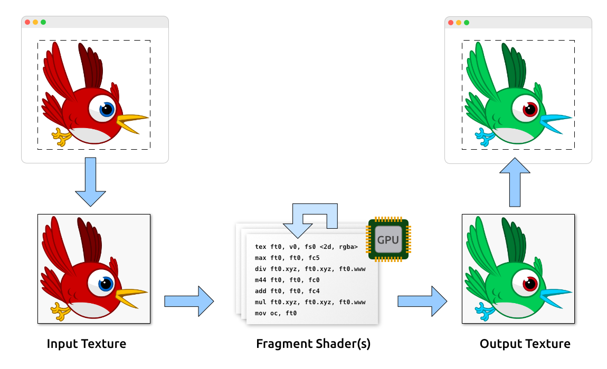
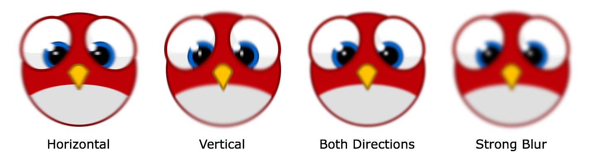
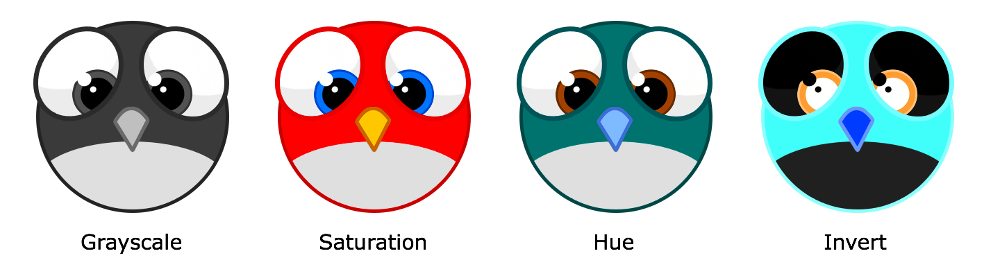
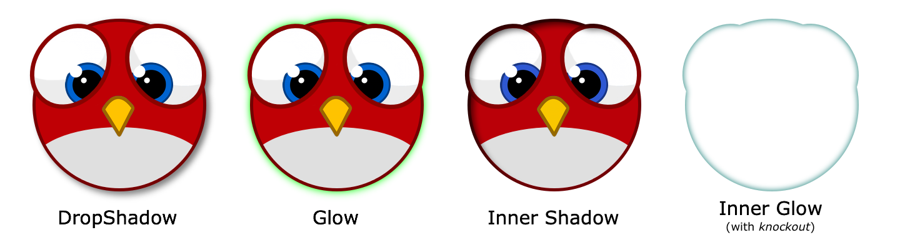
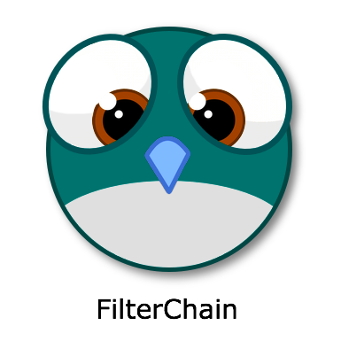

var filter:BlurFilter = new BlurFilter(); (1)
object.filter = filter; (2)Fragment Filters
Up to this point, all the drawable objects we discussed were meshes with (or without) textures mapped onto them. You can move meshes around, scale them, rotate them, and maybe tint them in a different color. All in all, however, the possibilities are rather limited — the look of the game is solely defined by its textures.
At some point, you will run into the limits of this approach; perhaps you need a variant of an image in multiple colors, blurred, or with a drop shadow. If you add all of those variants into your texture atlas, you will soon run out of memory.
Fragment filters can help with that. A filter can be attached to any display object (including containers) and can completely change its appearance.
For example, let’s say you want to add a Gaussian blur to an object:
| 1 | Create and configure an instance of the desired filter class. |
| 2 | Assign the filter to the filter property of a display object. |
With a filter assigned, rendering of a display object is modified like this:
-
Each frame, the target object is rendered into a texture.
-
That texture is processed by a fragment shader (directly on the GPU).
-
Some filters use multiple passes, i.e. the output of one shader is fed into the next.
-
Finally, the output of the last shader is drawn to the back buffer.

Figure 1. The render pipeline of fragment filters.
This approach is extremely flexible, allowing to produce all kinds of different effects (as we will see shortly). Furthermore, it makes great use of the GPU’s parallel processing abilities; all the expensive per-pixel logic is executed right on the graphics chip.
That said: filters break batching, and each filter step requires a separate draw call. They are not exactly cheap, both regarding memory usage and performance. So be careful and use them wisely.
Showcase
Out of the box, Starling comes with a few very useful filters.
BlurFilter
Applies a Gaussian blur to an object. The strength of the blur can be set for x- and y-axis separately.
-
Per blur direction, the filter requires at least one render pass (draw call).
-
Per strength unit, the filter requires one render pass (a strength of
1requires one pass, a strength of2two passes, etc). -
Instead of raising the blur strength, it’s often better to lower the filter resolution. That has a similar effect, but is much cheaper.

Figure 2. The BlurFilter in action.
ColorMatrixFilter
Dynamically alters the color of an object. Change an object’s brightness, saturation, hue, or invert it altogether.
This filter multiplies the color and alpha values of each pixel with a 4 × 5 matrix. That’s a very flexible concept, but it’s also quite cumbersome to get to the right matrix setup. For this reason, the class contains several helper methods that will set up the matrix for the effects you want to achieve (e.g. changing hue or saturation).
-
You can combine multiple color transformations in just one filter instance. For example, to change both brightness and saturation, call both of the corresponding methods on the filter.
-
This filter always requires exactly one pass.

Figure 3. The ColorMatrixFilter in action.
DropShadow- and GlowFilter
These two filters draw a shadow or glow (i.e. the result of a tinted BlurFilter) behind or inside the original object.
-
That also makes them rather expensive, because they add an additional render pass to what’s required by a pure BlurFilter.
-
Draw just the shadow or glow by setting
knockouttotrue.

Figure 4. DropShadow- and GlowFilter in action.
DisplacementMapFilter
Displaces the pixels of the target object depending on the colors in a map texture.
-
Not exactly easy to use, but very powerful!
-
Reflection on water, a magnifying glass, the shock wave of an explosion — this filter can do it.
Figure 5. The DisplacementMapFilter using a few different maps.
FilterChain
To combine several filters on one display object, you can chain them together via the FilterChain class. The filters will be processed in the given order; the number of draw calls per filter are simply added up.

Figure 6. ColorMatrix- and DropShadowFilter chained together.
Performance Tips
I mentioned it above: while the GPU processing part is very efficient, the additional draw calls make fragment filters rather expensive. However, Starling does its best to optimize filters.
-
When an object does not change its position relative to the stage (or other properties like scale and color) for two successive frames, Starling recognizes this and will automatically cache the filter output. This means that the filter won’t need to be processed any more; instead, it behaves just like a single image.
-
On the other hand, when the object is constantly moving, the last filter pass is always rendered directly to the back buffer instead of a texture. That spares one draw call.
-
If you want to keep using the filter output even though the object is moving, call
filter.cache(). Again, this will make the object act just like a static image. However, for any changes of the target object to show up, you must callcacheagain (oruncache). -
To save memory, experiment with the
resolutionandtextureFormatproperties. This will reduce image quality, though.
More Filters
Would you like to know how to create your own filters? Don’t worry, we will investigate that topic a little later (see Custom Filters).
In the meantime, you can try out filters created by other Starling developers. An excellent example is the filter collection by Devon O. Wolfgang.